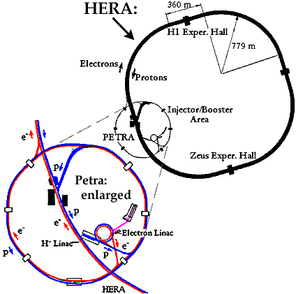

The DESY laboratory, located in Hamburg, Germany, discovered the gluon at the PETRA accelerator. DESY consists of two accelerators: HERA and PETRA. These accelerators collide electrons and protons.
